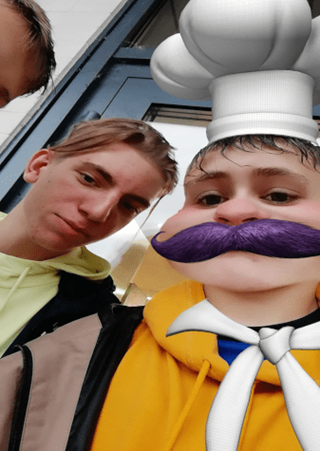

Filip OpalaMiSznyca
Urodzony 20 listopada 1990 roku nie wiadomo gdzie. Zamieszkały w Zalesiu, wsumie to też nie wiadomo co to ani gdzie to.
Nieoficjalnie 17 letni (konto w social mediach mówi, że ma 33 lata) młody bandyta i zabijaka, skazany wyrokiem za napaść na ucznia szkoły podstawowej.
Jeden z trendsetterów Sznycowania, wprowadzony do uniwersum przez Tymona. Od najmłodszych lat interesował się hejtem co sprawiło, że
został naczelnym hejterem w Zalesiu a potem także całym województwie. Przez kilka lat grał w młodzikach drużyny Stomil Olsztyn, ale porzucił karierę piłkarską
na rzecz e-sportu i Leauge of Legends. Wkrótce stał się jednym z największych hardstackuw w Platynie 4.
Filip ma jedną siostrę.

Filip przebrany za KucharzoSznycera
Osiągnięcia
- Najlepszy gracz sylasa w Zalesiu.
- Wypicie Tyskiego na hita
- Order zasług dla SznycSpołeczności w 2021
- Hardstuck P4
- Uderzenie rozpędzonym wózkiem sklepowym w ścianę
Ważne wydarzenia
- Degustacja rosołu
Ciekawostki
- Uderzenie wózkiem sklepowym w ścianę spowodowało prawdopodobnie gigantyczne trzęsienie ziemi w Turcji i Syrii.
- Ma słaby internet.
- Czasem kosi trawę kosiarką.